Conception d’une base de données¶
Ce chapitre est consacré la démarche de conception d’une base relationnelle. L’objectif de cette conception est de parvenir à un schéma normalisé représentant correctement le domaine applicatif à conserver en base de données.
La notion de normalisation a été introduite dans le chapitre Le modèle relationnel. Elle s’appuie sur les notions de dépendances fonctionnelles et de clés. On peut, à l’aide de ces notions, caractériser des formes dites « normales ». Peut-on aller plus loin et déterminer comment obtenir une forme normale en partant d’un ensemble global d’attributs liés par des dépendances fonctionnelles? La première session étudie cette question. Comprendre la normalisation est essentiel pour produire des schémas corrects, viables sur le long terme.
La détermination des clés, des attributs, de leurs dépendances, relève d’une phase de conception. La méthode pratique la plus utilisée est de produire une notation entité / association. Elle ne présente pas de difficulté technique mais on constate en pratique qu’elle demande une certaine expérience parce qu’on est confronté à un besoin applicatif pas toujours bien défini, qu’il est difficile de transcrire dans un modèle formel. Les sessions suivantes présentent cette approche et des exemples commentés.
S1: La normalisation¶
Supports complémentaires:
Etant donné un schéma et ses dépendances fonctionnelles, nous savons déterminer s’il est normalisé. Peut-on aller plus loin et produire automatiquement un schéma normalisé à partir de l’ensemble des attributs et de leurs contraintes (les DFs)?
La décomposition d’un schéma¶
Regardons d’abord le principe avec un exemple illustrant la normalisation d’un schéma relationnel par un processus de décomposition progressif. On veut représenter l’organisation d’un ensemble d’immeubles locatifs en appartements, et décrire les informations relatives aux propriétaires des immeubles et aux occupants de chaque appartement. Voici un premier schéma de relation :
Appart(idAppart, surface, idImmeuble, nbEtages, dateConstruction)
Voici les dépendances fonctionnelles. La première montre
que la clé est idAppart: tous les autres attributs en dépendent.
La seconde représente le fait que l’identifiant de l’immeuble détermine fonctionnellement le nombre d’étages et la date de construction.
\[idImmeuble \to nbEtages, dateConstruction\]
Cette relation est-elle normalisée? Non, car la seconde DF montre
une dépendance dont la partie gauche n’est pas la clé,
idAppart.
En pratique, une telle relation
dupliquerait le nombre d’étages et la date
de construction autant de fois qu’il y a d’appartements
dans un immeuble.
Une idée naturelle est de prendre les dépendances fonctionnnelles minimales et directes:
et
\[idImmeuble \to nbEtages, dateConstruction\]
On peut alors créer une table pour chacune. On obtient une décomposition en deux relations :
Appart(idAppart, surface, idImmeuble)
Immeuble (idImmeuble, nbEtages, dateConstruction)
On n’a pas perdu d’information: connaissant idAppart, je connais
idImmeuble, et connaissant idImmeuble je connais
les attributs de l’immeuble: je suis donc en mesure de reconstituer
l’information initiale. En revanche, j’ai bien éliminé les redondances:
les propriétés de l’immeuble ne seront énoncées qu’une seule fois.
Supposons maintenant qu’un immeuble puisse être détenu par plusieurs propriétaires, et considérons la seconde relation suivante,:
Proprietaire(idAppart, idPersonne, quotePart)
Est-elle normalisée ? Oui car l’unique dépendance fonctionnelle est
Un peu de réflexion suffit à se convaincre
que ni l’appartement, ni le propriétaire ne déterminent
à eux seuls la quote-part. Seule l’association des deux
permet de donner un sens à cette information, et la
clé est donc le couple (idAppart, idPersonne). Maintenant
considérons l’ajout du nom et du prénom
du propriétaire dans la relation.
Propriétaire(idAppart, idPersonne, prénom, nom, quotePart)
La dépendance fonctionnelle \(idPersonne \to prénom, nom\) indique que cette relation n’est pas normalisée. En appliquant la même décomposition que précédemment, on obtient le bon schéma :
Propriétaire(idAppart, idPersonne, quotePart)
Personne(idPersonne, prénom, nom)
Voyons pour finir le cas des occupants d’un appartement, avec la relation suivante.
Occupant(idPersonne, nom, prénom, idAppart, surface)
On mélange clairement des informations sur les personnes,
et d’autres sur les appartements. Plus précisément,
la clé est la paire (idPersonne, idAppart), mais
on a les dépendances suivantes :
\(idPersonne \to prénom, nom\)
\(idAppart \to surface\)
Un premier réflexe pourrait être de décomposer en deux relations
Personne(idPersonne, prénom, nom)
et Appart (idAppart, surface). Toutes
deux sont normalisées, mais
on perd alors une information importante, et même
essentielle : le fait que telle personne occupe
tel appartement. Cette information est représentée
par la clé (idPersonne, idAppart). On la préserve en créant
une relation Occupant (idPersonne, idAppart). D’où
le schéma final :
Immeuble (idImmeuble, nbEtages, dateConstruction)
Proprietaire(idAppart, idPersonne, quotePart)
Personne (idPersonne, prénom, nom)
Appart (idAppart, surface, idImmeuble)
Occupant (idPersonne, idAppart)
Ce schéma, obtenu par décompositions successives, présente la double propriété
de ne pas avoir perdu d’information par rapport à la version initiale;
de ne contenir que des relations normalisées.
Important
L’absence de perte d’information est une notion qui est survolée ici mais qui est de fait essentielle. Maintenant que nous connaissons SQL, elle est facile à comprendre: l’opération inverse de la décomposition est la jointure, effectuée entre la clé primaire d’une table et la clé étrangère référençant cette table. Cette opération reconstitue les données avant décomposition, et elle est tellement naturelle qu’il existe un opérateur algébrique de ce nom, par exemple:
select *
from Appart natural join Immeuble
La décomposition d’une table \(T\) en plusieurs tables \(T_1, T_2, \cdots, T_n\) est sans perte d’information quand on peut reconstituer \(T\) avec des jointures \(T_1 \Join T_2 \Join \cdots \Join T_n\).
Et voilà. C’est cohérent, simple et élégant.
Algorithme de normalisation¶
Voici en résumé la procédure de normalisation par décomposition.
Algorithme de normalisation
On part d’un schéma de relation \(R\), et on suppose donné l’ensemble des dépendances fonctionnelles minimales et directes sur \(R\).
On détermine alors les clés de \(R\), et on applique la décomposition:
Pour chaque DF minimale et directe \(X \to A_1, \cdots A_n\) on crée une relation \((X, A_1, \cdots A_n)\) de clé \(X\)
Pour chaque clé \(C\) non représentée dans une des relations précédentes, on crée une relation \((C)\) de clé \(C\).
On obtient un schéma de base de données normalisé et sans perte d’information.
Nous disposons donc d’une approche algorithmique pour obtenir un schéma normalisé à partir d’un ensemble initial d’attributs. Cette approche est fondamentalement instructive sur l’objectif à atteindre et la méthode conceptuelle pour y parvenir.
Elle est malheureusement difficilement utilisable telle quelle à cause d’une difficulté rencontrée en pratique: l’absence ou la rareté de dépendances fonctionnelles « naturelles ». Celles présentes dans notre schéma ont été artificiellement créées par ajout d’identifiants pour les immeubles, les occupants et les appartements. Dans la vraie vie, de tels identifiants n’existent pas si l’on n’a pas au préalable déterminé les « entités » présentes dans le schéma: Immeuble, Occupant, et Appartement. En d’autres termes, l’exemple qui précède s’appuie sur une forme de connaissance préalable qui guide à l’avance la décomposition.
La normalisation doit donc être intégrée à une approche plus globale qui « injecte » des dépendances fonctionnelles dans un schéma par identification préalable des entités (les appartements, les immeubles) et des contraintes qu’elles imposent. Le schéma est alors obtenu par application de l’algorithme.
Une approche globale¶
Reprenons notre table des films pour nous confronter à une situation réaliste. Rappelons les quelques attributs considérés.
(titre, année, prénomMes, nomMES, annéeNaiss)
La triste réalité est qu’on ne trouve aucune dépendance fonctionnelle dans cet ensemble d’attributs. Le titre d’un film ne détermine rien puisqu’il y a évidemment des films différents avec le même titre, Eventuellement, la paire (titre, année) pourrait déterminer de manière univoque un film, mais un peu de réflexion suffit à se convaincre qu’il est très possible de trouver deux films différents avec le même titre la même année. Et ainsi de suite: le nom du réalisateur ou même la paire (prénom, nom) sont des candidats très fragiles pour définir des dépendances fonctionnelles. En fait, on constate qu’il est très rare en pratique de trouver des DFs « naturelles » sur lesquelles on peut solidement s’appuyer pour définir un schéma.
Il nous faut donc une démarche préalable consistant à créer artificiellement des DFs parmi les ensembles d’attributs. La connaissance des identifiants d’appartement, d’immeuble et de personne dans notre exemple précédent correspondait à une telle pré-conception: tous les attributs de, respectivement, Immeuble, Appartement et Personne, dépendent fonctionnellement, par construction, de leurs identifiants respectifs, ajoutés au schéma.
Comment trouve-t-on ces identifiants? Par une démarche consistant à:
déterminer les « entités » (immeuble, personne, appartement, ou film et réalisateur) pertinents pour l’application;
définir une méthode d’identification de chaque entité; en pratique on recourt à la définition d’un identifiant artificiel (il n’a aucun rôle descriptif) qui permet d’une part de s’assurer qu’une même « entité » est représentée une seule fois, d’autre part de référencer une entité par son identifiant.
définir les liens entre les entités.
Voici une illustration informelle de la méthode, que nous reprendrons ensuite de manière plus détailée avec la notation Entité/association.
Commençons par les deux premières étapes. Quelles sont nos entités ? On va décider (il y a dans
le processus de conception une part de choix, c’est sa fragilité)
que nous avons des entités Film et des entités Réalisateur.
Cela revient à ajouter des identifiants idFilm et idRéalisateur
dans le schéma.
(idFilm, titre, année, idRéalisateur, prénom, nom, annéeNaiss)
avec les dépendances directes et minimales suivantes:
et
Important
Le choix de l’identifiant est un sujet délicat. On peut arguer en effet que l’identifiant devrait être recherché dans les attributs existants, au lieu d’en créer un artificiellement. Pour des raisons qui tiennent à la rareté/fragilité des DFs « naturelles », la création de l’identifiant artificiel est la seule réellement applicable et satisfaisante dans tous les cas.
À partir de là, il reste à appliquer l’algorithme de normalisation. On obtient
une table Film (idFilm, titre, année, idRéalisateur) avec une
clé primaire et une clé étrangère, et une table
Réalisateur (idRéalisateur, nom, prénom, annéeeNaiss).
Important
Il faut veiller à ce que les schémas obtenus soient normalisés. C’est le cas ici puisque les seules DF sont celles issues de l’identifiant.
Voici un exemple pour la table des réalisateurs:
idRéalisateur |
titre |
année |
|
|---|---|---|---|
101 |
Scott |
Ridley |
1943 |
102 |
Hitchcock |
Alfred |
1899 |
103 |
Kurosawa |
Akira |
1910 |
104 |
Woo |
John |
1946 |
105 |
Tarantino |
Quentin |
1963 |
106 |
Cameron |
James |
1954 |
107 |
Tarkovski |
Andrei |
1932 |
Et pour la table des Films:
idFilm |
titre |
année |
idRéalisateur |
|---|---|---|---|
1 |
Alien |
1979 |
101 |
2 |
Vertigo |
1958 |
102 |
3 |
Psychose |
1960 |
102 |
4 |
Kagemusha |
1980 |
103 |
5 |
Volte-face |
1997 |
104 |
6 |
Pulp Fiction |
1995 |
105 |
7 |
Titanic |
1997 |
106 |
8 |
Sacrifice |
1986 |
107 |
Note
La valeur d’un identifiant est locale à une table. On ne peut pas trouver deux fois la même valeur d’identifiant dans une même table, mais rien n’interdit qu’elle soit présente dans deux tables différentes. On aurait donc pu « numéroter » les réalisateurs 1, 2, 3, …, comme pour les films. Ici, nous leur avons donné des identifiants 101, 102, …, pour clarifier les explications.
Cette représentation est correcte. Il n’y a pas de redondance des attributs descriptifs, donc toute mise à jour affecte l’unique occurrence de la donnée à modifier. D’autre part, on peut détruire un film sans affecter les informations sur le réalisateur. La décomposition n’a pas pour contrepartie une perte d’information puisque l’information initiale (autrement dit, avant la décomposition en deux tables) peut être reconstituée intégralement. En prenant un film, on obtient l’identifiant de son metteur en scène, et cette identifiant permet de trouver l’unique ligne dans la table des réalisateurs qui contient toutes les informations sur ce metteur en scène. Ce processus de reconstruction de l’information, dispersée dans plusieurs tables, peut s’exprimer avec la jointure.
Tout est dit. En maîtrisant la normalisation relationnelle et l’interrogation relationnelle, vous maîtrisez les deux méthodes fondamentales pour la création de bases de données.


S2: Le modèle Entité-Association¶
Supports complémentaires:
Cette session présente une méthode complète pour aboutir à un schéma relationnel normalisé. Complète ne veut pas dire infaillible: aucune méthode ne produit automatiquement un résultat correct, puisqu’elle repose sur un processus d’analyse et d’identification des entités dont rien ne peut garantir la validité par rapport à un besoin souvent insuffisamment précis.
Le modèle Entité/Association (E/A) propose essentiellement une notation pour soutenir la démarche de conception de schéma présentée précédemment. La notation E/A a pour caractéristiques d’être simple et suffisamment puissante pour modéliser des structures relationnelles. De plus, elle repose sur une représentation graphique qui facilite sa compréhension.
Le schéma de la base Films¶
La présentation qui suit est délibérement axée sur l’utilité du modèle E/A dans le cadre de la conception d’une base de données. Ajoutons qu’il ne s’agit pas directement de concevoir un schéma E/A (voir un cours sur les systèmes d’information), mais d’être capable de le comprendre et de l’interpréter. Nous reprenons l’exemple d’une base de données décrivant des films, avec leur metteur en scène et leurs acteurs, ainsi que les cinémas où passent ces films. Nous supposerons également que cette base de données est accessible sur le Web et que des internautes peuvent noter les films qu’ils ont vus.
La méthode permet de distinguer les entités qui constituent la base de données, et les associations entre ces entités. Un schéma E/A décrit l’application visée, c’est-à-dire une abstraction d’un domaine d’étude, pertinente relativement aux objectifs visés. Rappelons qu’une abstraction consiste à choisir certains aspects de la réalité perçue (et donc à éliminer les autres). Cette sélection se fait en fonction de certains besoins, qui doivent être précisément définis, et rélève d’une démarche d’analyse qui n’est pas abordée ici.
{kind=link}
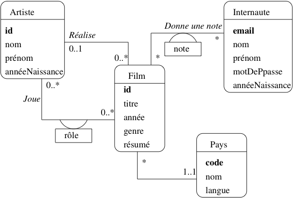
Fig. 21 Le schéma E/A des films¶
Par exemple, pour notre base de données Films, on n’a pas besoin de stocker dans la base de données l’intégralité des informations relatives à un internaute, ou à un film. Seules comptent celles qui sont importantes pour l’application. Voici le schéma décrivant cete base de données Films (figure Fig. 21). Sans entrer dans les détails pour l’instant, on distingue
des entités, représentées par des rectangles, ici Film, Artiste, Internaute et Pays ;
des associations entre entités représentées par des liens entre ces rectangles. Ici on a représenté par exemple le fait qu’un artiste joue dans des films, qu’un internaute note des films, etc.
Chaque entité est caractérisée par un ensemble d’attributs, parmi lesquels un ou plusieurs forment l’identifiant unique (en gras). Il est essentiel de dire ce qui caractérise de manière unique une entité, de manière à éviter la redondance d’information. Comme nous l’avons préconisé précédemment, un attribut non-descriptif a été ajouté à chaque entité, indépendamment des attributs « descriptifs ». Nous l’avons appelé id pour Film et Artiste, code pour le pays. Le nom de l’attribut-identifiant est peu important, même si la convention id est très répandue.
Seule exception: les internautes sont identifiés par un de leurs attributs descriptifs, leur adresse de courrier électronique. Même s’il s’agit en apparence d’un choix raisonnable (unicité de l’email pour identifier une personne), ce cas nous permettra d’illustrer les problèmes qui peuvent quand même se poser.
Les associations sont caractérisées par des cardinalités. La notation 0..* sur le lien Réalise, du côté de l’entité Film, signifie qu’un artiste peut réaliser plusieurs films, ou aucun. La notation 0..1 du côté Artiste signifie en revanche qu’un film ne peut être réalisé que par au plus un artiste. En revanche dans l’association Donne une note, un internaute peut noter plusieurs films, et un film peut être noté par plusieurs internautes, ce qui justifie l’a présence de 0..* aux deux extrêmités de l’association.
Le choix des cardinalités est essentiel. Ce choix est aussi parfois discutable, et constitue donc l’un des aspects les plus délicats de la modélisation. Reprenons l’exemple de l’association Réalise. En indiquant qu’un film est réalisé par un seul metteur en scène, on s’interdit les – pas si rares – situations où un film est réalisé par plusieurs personnes. Il ne sera donc pas possible de représenter dans la base de données une telle situation. Tout est ici question de choix et de compromis : est-on prêt en l’occurrence à accepter une structure plus complexe (avec 0..* de chaque côté) pour l’association Réalise, pour prendre en compte un nombre minime de cas ?
Les cardinalités sont notées par deux chiffres. Le chiffre de droite est la cardinalité maximale, qui vaut en général 1 ou *. Le chiffre de gauche est la cardinalité minimale. Par exemple la notation 0..1 entre Artiste et Film indique qu’on s’autorise à ne pas connaître le metteur en scène d’un film. Attention : cela ne signifie pas que ce metteur en scène n’existe pas. Une base de données, telle qu’elle est décrite par un schéma E/A, ne prétend pas donner une vision exhaustive de la réalité. On ne doit surtout pas chercher à tout représenter, mais s’assurer de la prise en compte des besoins de l’application.
La notation 1..1 entre Film et Pays indique au contraire que l’on doit toujours connaître le pays producteur d’un film. On devra donc interdire le stockage dans la base d’un film sans son pays.
Les cardinalités minimales sont moins importantes que les cardinalités maximales, car elles ont un impact limité sur la structure de la base de données et peuvent plus facilement être remises en cause après coup. Il faut bien être conscient de plus qu’elles ne représentent qu’un choix de conception, souvent discutable. Dans la notation UML que nous présentons ici, il existe des notations abrégées qui donnent des valeurs implicites aux cardinalités minimales :
La notation * est équivalente à 0..* ;
la notation 1 est équivalente à 1..1 .
Outre les propriétés déjà évoquées (simplicité, clarté de lecture), évidentes sur ce schéma, on peut noter aussi que la modélisation conceptuelle est totalement indépendante de tout choix d’implantation. Le schéma de la figure Le schéma E/A des films ne spécifie aucun système en particulier. Il n’est pas non plus question de type ou de structure de données, d’algorithme, de langage, etc. En principe, il s’agit donc de la partie la plus stable d’une application. Le fait de se débarrasser à ce stade de la plupart des considérations techniques permet de se concentrer sur l’essentiel : que veut-on stocker dans la base ?
Une des principales difficultés dans le maniement des schémas E/A est que la qualité du résultat ne peut s’évaluer que par rapport à une demande qui est difficilement formalisable. Il est donc souvent difficile de mesurer (en fonction de quels critères et quelle métrique ?) l’adéquation du résultat au besoin. Peut-on affirmer par exemple que :
toutes les informations nécessaires sont représentées ?
qu’un film ne sera jamais réalisé par plus d’un artiste ?
Il faut faire des choix, en connaissance de cause, en sachant toutefois qu’il est toujours possible de faire évoluer une base de données, quand cette évolution n’implique pas de restructuration trop importante. Pour reprendre les exemples ci-dessus, il est facile d’ajouter des informations pour décrire un film ou un internaute ; il serait beaucoup plus difficile de modifier la base pour qu’un film passe de un, et un seul, réalisateur, à plusieurs. Quant à changer l’identifiant de la table Internaute, c’est une des évolutions les plus complexes à réaliser. Les cardinalités et le choix des clés font vraiment partie des aspects décisifs des choix de conception.
Entités, attributs et identifiants¶
Il est difficile de donner une définition très précise des entités. Les points essentiels sont résumés par la définition ci-dessous.
Définition: Entités
On désigne par entité toute unité d’information identifiable et pertinente pour l’application.
La notion d’unité d’information correspond au fait qu’une entité ne peut pas se décomposer sans perte de sens. Comme nous l’avons vu précédemment, l’identité est primordiale. C’est elle qui permet de distinguer les entités les unes des autres, et donc de dire qu’une information est redondante ou qu’elle ne l’est pas. Il est indispensable de prévoir un moyen technique pour pouvoir effectuer cette distinction entre entités au niveau de la base de données : on parle d’identifiant ou (dans un contexte de base de données) de clé. Reportez-vous au chapitre Le modèle relationnel pour une définition précise de cette notion.
La pertinence est également importante : on ne doit prendre en compte que les informations nécessaires pour satisfaire les besoins. Par exemple :
le film Impitoyable ;
l’acteur Clint Eastwood ;
sont des entités pour la base Films.
La première étape d’une conception consiste à identifier les entités utiles. On peut souvent le faire en considérant quelques cas particuliers. La deuxième est de regrouper les entités en ensembles : en général on ne s’intéresse pas à un individu particulier mais à des groupes. Par exemple il est clair que les films et les acteurs constituent des ensembles distincts d’entités. Qu’en est-il de l’ensemble des réalisateurs et de l’ensemble des acteurs ? Doit-on les distinguer ou les assembler ? Il est certainement préférable de les assembler, puisque des acteurs peuvent aussi être réalisateurs.
Attributs
Les entités sont caractérisées par des attributs (ou propriétés): le titre (du film), le nom (de l’acteur), sa date de naissance, l’adresse, etc. Le choix des attributs relève de la même démarche d’abstraction qui a dicté la sélection des entités : il n’est pas nécéssaire de donner exhaustivement tous les attributs d’une entité. On ne garde que ceux utiles pour l’application.
Un attribut est désigné par un nom et prend sa valeur dans un domaine comme les entiers, les chaînes de caractères, les dates, etc.
Un attribut peut prendre une valeur et une seule. On dit que les attributs sont atomiques. Il s’agit d’une restriction importante puisqu’on s’interdit, par exemple, de définir un attribut téléphones d’une entité Personne, prenant pour valeur les numéros de téléphone d’une personne. Cette restricion est l’une des limites du modèle relationnel, qui mène à la multiplication des tables par le mécanisme de normalisation dérit en début de chapitre. Pour notre exemple, il faudrait par exemple définir une table dédiée aux numéros de téléphone et associée aux personnes.
Note
Certaines méthodes admettent l’introduction de constructions plus complexes :
les attributs multivalués sont constitués d’un ensemble de valeurs prises dans un même domaine ; une telle construction permet de résoudre le problème des numéros de téléphones multiples ;
les attributs composés sont constitués par agrégation d’autres atributs ; un attribut adresse peut par exemple être décrit comme l’agrégation d’un code postal, d’un numéro de rue, d’un nom de rue et d’un nom de ville.
Cette modélisation dans le modèle conceptuel (E/A) doit pouvoir être transposée dans la base de données. Certains systèmes relationnels (PostgreSQL par exemple) autorisent des attributs complexes. Une autre solution est de recourir à d’autres modèles, semi-structurés ou objets.
Nous nous en tiendrons pour l’instant aux attributs atomiques qui, au moins dans le contexte d’une modélisation orientée vers un SGBD relationnel, sont suffisants.
Types d’entités¶
Il est maintenant possible de décrire un peu plus précisément les entités par leur type.
Définition: Type d’entité
Le type d’une entité est composé des éléments suivants :
son nom ;
la liste de ses attributs avec, – optionnellement – le domaine où l’attribut prend ses valeurs : les entiers, les chaînes de caractères ;
l’indication du (ou des) attribut(s) permettant d’identifier l’entité : ils constituent la clé.
On dit qu’une entité e est une instance de son type E. Enfin, un ensemble d’entités \(\{e_1, e_2, \ldots e_n\}\), instances d’un même type \(E\) est une extension de \(E\).
Rappelons maintenant la notion de clé, pratiquement identique à celle énoncée pour les schémas relationnels.
Définition: clé
Soit \(E\) un type d’entité et \(A\) l’ensemble des attributs de \(E\). Une clé de \(E\) est un sous-ensemble minimal de \(A\) permettant d’identifier de manière unique une entité parmi n’importe quelle extension de \(E\).
Prenons quelques exemples pour illustrer cette définition.
Un internaute est caractérisé par plusieurs attributs : son
email, son nom, son prénom, la région où il habite.
L’adresse mail constitue une clé naturelle puisqu’on ne trouve pas, en principe,
deux internautes ayant la même adresse électronique.
En revanche l’identification par le nom seul paraît impossible puisqu’on
constituerait facilement un ensemble
contenant deux internautes avec le même nom.
On pourrait penser à utiliser la paire (nom,prénom),
mais il faut utiliser avec modération l’utilisation d’identifiants composés de plusieurs
attributs. Quoique possible, elle peut poser des problèmes de
performance et complique les manipulations par SQL.
Il est possible d’avoir plusieurs clés candidates pour un même ensemble d’entités. Dans ce cas on en choisit une comme clé principale (ou primaire), et les autres comme clés secondaires. Le choix de la clé (primaire) est déterminant pour la qualité du schéma de la base de données. Les caractéristiques d’une bonne clé primaire sont les suivantes :
elle désigne sans ambiguité une et une seule entité dans toute extension;
sa valeur est connue pour toute entité ;
on ne doit jamais avoir besoin de la modifier ;
enfin, pour des raisons de performance, sa taille de stockage doit être la plus petite possible.
Il est très difficile de trouver un ensemble d’attributs satisfaisant ces propriétés parmi les attributs descriptifs d’une entité. Considérons l’exemple des films. Le choix du titre pour identifier un film serait incorrect puisqu’on aura affaire un jour ou l’autre à deux films ayant le même titre. Même en combinant le titre avec un autre attribut (par exemple l’année), il est difficile de garantir l’unicité.
Le choix de l’adresse électronique (email) pour un internaute semble respecter ces conditions, du moins la première (unicité). Mais peut-on vraiment garantir que l’email sera connu au moment de la création de l’entité? De plus, il semble clair que cette adresse peut changer, ce qui va poser de gros problèmes puisque la clé, comme nous le verrons, sert à référencer une entité. Changer l’identifiant de l’entité implique donc de changer aussi toutes les références. La conclusion s’impose: ce choix d’identifiant est un mauvais choix, il posera à terme des problèmes pratiques.
Insistons: la seule solution saine et générique consiste à créer
un identifiant artificiel, indépendant de tout autre attribut. On peut ainsi
ajouter dans le type d’entité Film un attribut id, corespondant à un numéro
séquentiel qui sera incrémenté au fur et à mesure des insertions. Ce choix est de fait
le meilleur, dès lors qu’un attribut ne respecte pas les conditions ci-dessus
(autrement dit, toujours). Il satisfait
ces conditions: on
peut toujours lui attribuer une valeur, il ne sera jamais nécessaire
de la modifier, et elle a une représentation compacte.
On représente graphiquement un type d’entité comme sur la Fig. 22 qui donne l’exemple des types Internaute et Film. L’attribut (ou les attributs s’il y en a plusieurs) formant la clé sont en gras.
{kind=link}
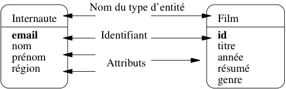
Fig. 22 Représentation des types d’entité¶
Il est important de bien distinguer types d’entités et entités. La distinction est la même qu’entre entre type et valeur dans un langage de programmation, ou schéma et base dans un SGBD.
Associations binaires¶
La représentation (et le stockage) d’entités indépendantes les unes des autres est de peu d’utilité. On va maintenant décrire les relations (ou associations) entre des ensembles d’entités.
Définition: association
Une association binaire entre les ensembles d’entités \(E_1\) et \(E_2\) est un ensemble de couples \((e_1, e_2)\), avec \(e_1 \in E_1\) et \(e_2 \in E_2\).
C’est la notion classique, ensembliste, de relation. On emploie plutôt le terme d’association pour éviter toute confusion avec le modèle relationnel. Une bonne manière d’interpréter une association entre des ensembles d’entités est de faire un petit graphe où on prend quelques exemples, les plus généraux possibles.
{kind=link}
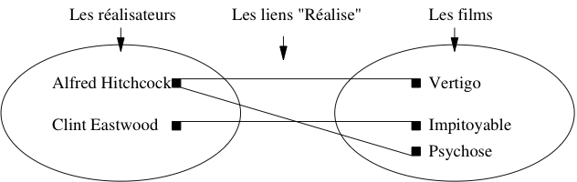
Fig. 23 Association entre deux ensembles¶
Prenons l’exemple de l’association représentant le fait qu’un réalisateur met en scène des films. Sur le graphe de la Fig. 23 on remarque que :
certains réalisateurs mettent en scène plusieurs films ;
inversement, un film est mis en scène par au plus un réalisateur.
La recherche des situations les plus générales possibles vise à s’assurer que les deux caractéristiques ci-dessus sont vraies dans tout les cas. Bien entendu on peut trouver x % des cas où un film a plusieurs réalisateurs, mais la question se pose alors : doit-on modifier la structure de notre base, pour x % des cas. Ici, on a décidé que non. Encore une fois on ne cherche pas à représenter la réalité dans toute sa complexité, mais seulement la partie de cette réalité que l’on veut stocker dans la base de données.
Ces caractéristiques sont essentielles dans la description d’une association entre des ensembles d’entités.
Définition: cardinalités
Soit une association \((E_1, E_2)\) entre deux types d’entités. La cardinalité de l’association pour \(E_i, i \in \{1, 2\}\), est une paire \([min, max]\) telle que :
Le symbole max (cardinalité maximale) désigne le nombre maximal de fois où une une entité \(e_i\) peut intervenir dans l’association.
En général, ce nombre est 1 (au plus une fois) ou \(n\) (plusieurs fois, nombre indeterminé), noté par le symbole *.
Le symbole min (cardinalité minimale) désigne le nombre minimal de fois où une une entité \(e_i\) peut intervenir dans l’association.
En général, ce nombre est 1 (au moins une fois) ou 0.
Les cardinalités maximales sont plus importantes que les cardinalités minimales ou, plus précisément, elles s’avèrent beaucoup plus difficiles à remettre en cause une fois que le schéma de la base est constitué. On décrit donc souvent une association de manière abrégée en omettant les cardinalités minimales. La notation * en UML, est l’abréviation de 0..*, et 1 est l’abréviation de 1..1. On caractérise également une association de manière concise en donnant les cardinalités maximales aux deux extrêmités, par exemple 1:* (association de un à plusieurs) ou *:* (association de plusieurs à plusieurs).
Les cardinalités minimales sont parfois désignées par le terme contraintes de participation. La valeur 0 indique qu’une entité peut ne pas participer à l’association, et la valeur 1 qu’elle doit y participer.
Insistons sur le point suivant : les cardinalités n’expriment pas une vérité absolue, mais des choix de conception. Elles ne peuvent être déclarés valides que relativement à un besoin. Plus ce besoin sera exprimé précisément, et plus il sera possible d’appécier la qualité du modèle.
Il existe plusieurs manières de noter une association entre types d’entités. Nous utilisons ici la notation de la méthode UML. En France, on utilise aussi couramment – de moins en moins – la notation de la méthode MERISE que nous ne présenterons pas ici.
{kind=link}
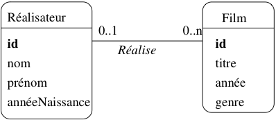
Fig. 24 Représentation de l’association¶
Dans la notation UML, on indique les cardinalités aux deux extrêmités d’un lien d’association entre deux types d’entités \(T_A\) et \(T_B\). Les cardinalités pour \(T_A\) sont placées à l’extrémité du lien allant de \(T_A\) à \(T_B\) et les cardinalités pour \(T_B\) sont l’extrémité du lien allant de \(T_B\) à \(T_A\).
Pour l’association entre Réalisateur et Film, cela donne l’association de la Fig. 24. Cette association se lit Un réalisateur réalise zéro, un ou plusieurs films, mais on pourrait tout aussi bien utiliser la forme passive avec comme intitulé de l’association Est réalisé par et une lecture Un film est réalisé par au plus un réalisateur. Le seul critère à privilégier dans ce choix des termes est la clarté de la représentation.
Prenons maintenant l’exemple de l’association (Acteur, Film) représentant le fait qu’un acteur joue dans un film. Un graphe basé sur quelques exemples est donné dans la Fig. 25. On constate tout d’abord qu’un acteur peut jouer dans plusieurs films, et que dans un film on trouve plusieurs acteurs. Mieux : Clint Eastwood, qui apparaissait déjà en tant que metteur en scène, est maintenant également acteur, et dans le même film.
{kind=link}
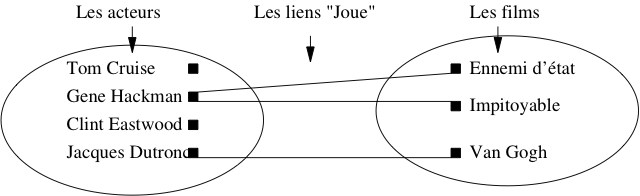
Fig. 25 Association (Acteur,Film)¶
Cette dernière constatation mène à la conclusion qu’il vaut mieux regrouper les acteurs et les réalisateurs dans un même ensemble, désigné par le terme plus général « Artiste ». On obtient le schéma de la Fig. 26, avec les deux associations représentant les deux types de lien possible entre un artiste et un film : il peut jouer dans le film, ou le réaliser. Ce « ou » n’est pas exclusif : Eastwood joue dans Impitoyable, qu’il a aussi réalisé.
{kind=link}
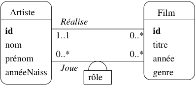
Fig. 26 Association entre Artiste et Film¶
Dans le cas d’associations avec des cardinalités multiples de chaque côté, on peut avoir des attributs qui ne peuvent être affectés qu’à l’association elle-même. Par exemple l’association Joue a pour attribut le rôle tenu par l’acteur dans le film (Fig. 26).
Rappelons qu’un attribut ne peut prendre qu’une et une seule valeur.
Clairement, on ne peut associer rôle ni à Acteur
puisqu’il a autant de valeurs possibles qu’il y a de films
dans lesquels cet acteur a joué, ni à Film, la réciproque étant vraie également.
Seules les associations ayant des cardinalités multiples
de chaque côté peuvent porter des attributs.
Quelle est la clé d’une association ? Si l’on s’en tient à la définition, une association est un ensemble de couples, et il ne peut donc y avoir deux fois le même couple (parce qu’on ne trouve pas deux fois le même élément dans un ensemble). On a donc :
Définition: Clé d’une association
La clé d’une association (binaire) entre un type d’entité \(E_1\) et un type d’entité \(E_2\) est la paire constituée de la clé \(c_1\) de \(E_1\) et de la clé \(c_2\) de \(E_2\).
Cette contrainte est parfois trop contraignante car on souhaite autoriser deux entités à être liées plus d’une fois dans une association.
{kind=link}
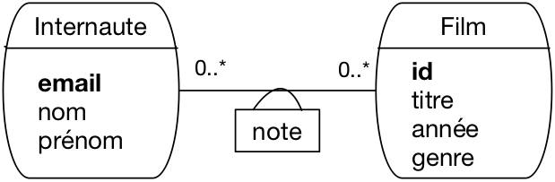
Fig. 27 Association entre Internaute et Film¶
Prenons le cas de l’association entre Internaute et Film (Fig. 27). Elle
est identifiée par la paire (idFilm, email).
Imaginons par exemple qu’un internaute soit amené à
noter à plusieurs reprises un film, et que l’on souhaite conserver
l’historique de ces notations successives. Avec une association binaire
entre Internaute et Film, c’est impossible : on ne peut définir qu’un seul lien entre un film donné
et un internaute donné.
Le problème est qu’il n’existe pas de moyen pour distinguer des liens multiples entre deux mêmes entités. Dans ce type de situation, on peut considérer que l’association est porteuse de trop sens et qu’il vaut mieux la réifier sous la forme d’une entité.
Note
La réification consiste à transformer en un objet réel et autonome une idée ou un concept. Ici, le concept d’association entre deux entités est réifié en lui donnant le statut d’entité, avec pour principale conséquence l’attribution d’un identifiant autonome. Cela signifie qu’une telle entité pourrait, en principe, exister indépendamment des entités de l’association initiale. Quelques précautions s’imposent, mais en pratique, c’est une option tout à fait valable.
{kind=link}
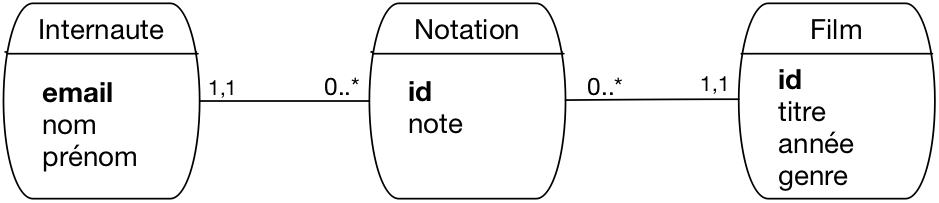
Fig. 28 réification de l’association entre Internaute et Film¶
La Fig. 28 montre le modèle obtenu en transformant l’association Note en entité Notation. Notez soigneusement les caractéristiques de cette transformation:
chaque note a maintenant un identifiant propre,
idune entité Note est liée par une association « plusieurs à un » respectivement à un film et à un internaute; cela reflète l’origine de cette entité, représentant un lien entre une paire d’entités (Film, Internaute).
Nous avons mis une contrainte de participation forte (1..1) pour ces associations, afin de conserver l’idée qu’une note ne saurait exister sans que l’on connaisse le film d’une part, l’internaute d’autre part.
Le choix de réifier ou non une association plusieurs-plusieurs relève du jugement. Dès qu’une association porte beaucoup d’information et des contraintes un peu complexes, il est sans doute préférable de la transformer en entité.
Note
Certains outils de conception ne permettent que les associations un-à-plusieurs, ce qui impose de fait de réifier les associations plusieurs-plusieurs.
S3: Concepts avancés¶
Supports complémentaires:
Cette session présente quelques extensions courantes aux principes de base du modèle entité-association.
Entités faibles¶
Jusqu’à présent nous avons considéré le cas d’entités indépendantes les unes des autres. Chaque entité, disposant de son propre identifiant, pouvait être considérée isolément. Il existe des cas où une entité ne peut exister qu’en étroite association avec une autre, et est identifiée relativement à cette autre entité. On parle alors d’entité faible.
Prenons l’exemple d’un cinéma, et de ses salles. On peut considérer chaque salle comme une entité, dotée d’attributs comme la capacité, l’équipement en son Dolby, ou autre. Il est diffcilement imaginable de représenter une salle sans qu’elle soit rattachée à son cinéma. C’est en effet au niveau du cinéma que l’on va trouver quelques informations générales comme l’adresse de la salle.
{kind=link}
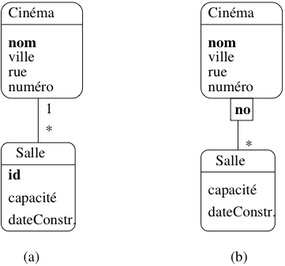
Fig. 29 Modélisations possibles du lien Cinéma-Salle¶
Il est possible de représenter le lien en un cinéma et ses salles
par une association classique, comme le montre la Fig. 29.a.
La cardinalité 1..1 force la participation d’une salle
à un lien d’association avec un et un seul cinéma. Cette représentation
est correcte, mais présente un (léger) inconvénient : on doit créer
un identifiant artificiel id pour le type d’entité Salle,
et numéroter toutes les salles, indépendamment du cinéma auquel
elles sont rattachées.
On peut considérer qu’il est plus naturel de numéroter les salles par un numéro interne à chaque cinéma. La clé d’identification d’une salle est alors constituée de deux parties:
la clé de Cinéma, qui indique dans quel cinéma se trouve la salle ;
le numéro de la salle au sein du cinéma.
En d’autres termes, l’entité Salle ne dispose pas d’une identification absolue, mais d’une identification relative à une autre entité. Bien entendu cela force la salle a toujours être associée à un et un seul cinéma.
La représentation graphique des entités faibles avec UML est illustrée
dans la Fig. 29.b. La salle est associée au cinéma
avec une association qualifiée par l’attribut no qui sert de discriminant
pour distinguer les salles au sein d’un même cinéma. Noter
que la cardinalité du côté Cinéma est implicitement 1..1.
L’introduction d’entités faibles est un subtilité qui permet de capturer une caractéristique intéressante du modèle. Elle n’est pas une nécessité absolue puisqu’on peut très bien utiliser une association classique. La principale différence est que, dans le cas d’une entité faible, on obtient une identification composée qui peut être plus pratique à gérer, et peut également rendre plus faciles certaines requêtes. On touche ici à la liberté de choix qui est laissée, sur bien des aspects, à un « modeleur » de base de données, et qui nécessite de s’appuyer sur une expérience robuste pour apprécier les conséquences de telle ou telle décision.
La présence d’un type d’entité faible \(B\) associé à un type d’entité \(A\) implique également des contraintes fortes sur les créations, modifications et destructions des instances de \(A\) car on doit toujours s’assurer que la contrainte est valide. Concrètement, en prenant l’exemple de Salle et de Cinéma, on doit mettre en place les mécanismes suivants :
quand on insère une salle dans la base, on doit toujours l’associer à un cinéma ;
quand un cinéma est détruit, on doit aussi détruire toutes ses salles ;
quand on modifie la clé d’un cinéma, il faut répercuter la modification sur toutes ses salles (mais il est préférable de ne jamais avoir à modifier une clé).
Réfléchissez bien à ces mécanismes pour apprécier le sucroît de contraintes apporté par des variantes des associations. Parmi les impacts qui en découlent, et pour respecter les règles de destruction/création énoncées, on doit mettre en place une stratégie. Nous verrons que les SGBD relationnels nous permettent de spécifier de telles stratégies.
Associations généralisées¶
On peut envisager des associations entre plus de deux entités, mais elles sont plus difficiles
à comprendre, et surtout la signification des cardinalités devient beaucoup plus ambigue.
Prenonsl’exemple
d’une association permettant de représenter la projection de certains films
dans des salles. Une association plusieurs-à-plusieurs entre Film
et Salle semble à priori faire l’affaire, mais dans ce cas l’identifiant
de chaque lien est la paire constituée (idFilm, idSalle). Cela
interdit de projeter plusieurs fois le même film
dans la même salle, ce qui pour le coup est inacceptable.
Il faut donc introduire une information supplémentaire, par exemple l’horaire, et définir association ternaire entre les types d’entités Film, Salle et Horaire. On obtient la Fig. 30.
{kind=link}
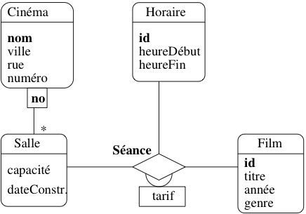
Fig. 30 Association ternaire représentant les séances¶
On tombe alors dans plusieurs complications. Tout d’abord les cardinalités sont, implicitement, 0..*. Il n’est pas possible de dire qu’une entité ne participe qu’une fois à l’association. Il est vrai que, d’une part la situation se présente rarement, d’autre part cette limitation est due à la notation UML qui place les cardinalités à l’extrémité opposée d’une entité.
Plus problématique en revanche est la détermination de la clé. Qu’est-ce qui identifie un lien entre trois entités ? En principe, la clé est le triplet constitué des clés respectives de la salle, du film et de l’horaire constituant le lien. On aurait donc le \(n\)-uplet [nomCinéma, noSalle, idFilm, idHoraire]. Une telle clé ne permet pas d’imposer certaines contraintes comme, par exemple, le fait que dans une salle, pour un horaire donné, il n’y a qu’un seul film.
Ajouter une telle contrainte, c’est signifier que la clé de l’association est en fait constitué de [nomCinéma, noSalle, idHoraire]. C’est donc un sous-ensemble de la concaténation des clés, ce qui semble rompre avec la définition donnée précédemment. Inutile de développer plus: les associations de degré supérieur à deux sont difficiles à manipuler et à interpréter. Il est toujours possible d’utiliser le mécanisme de réification déjà énoncé et de remplacer cette association par un type d’entité. Pour cela on suit la règle suivante :
Règle de réification
Soit \(A\) une association entre les types d’entité \(\{E_1, E_2, \ldots, E_n\}\). La transformation de \(A\) en type d’entité \(E_A\) s’effectue en deux étapes :
On attribue un identifiant autonome à \(E_A\).
On crée une association \(A_i\) de type “(0..n):(1..1)” entre \(E_A\) et chacun des \(E_i\).
Chaque instance de \(E_A\) doit impérativement être associée à une instance (et une seule) de chacun des \(E_i\). Cette contrainte de participation (le « 1..1 ») est héritée du fait que l’association initiale ne pouvait exister que comme lien créé entre les entités participantes.
L’association précédente peut être transformée en un type
d’entité Séance. On lui attribue un identifiant
idSéance, et des associations
“(0..n):(1..1)” avec Film, Horaire et Salle. Pour chaque
séance, on doit impérativement connaître le fillm, la salle et l’horaire.
On obtient le schéma de la Fig. 31.
{kind=link}
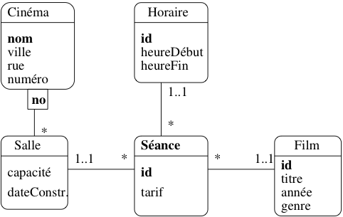
Fig. 31 L’association Séance transformée en entité¶
On peut ensuite ajouter des contraintes supplémentaires, indépendantes de la clé, pour dire par exemple qu’il ne peut y avoir qu’un film dans une salle pour un horaire. Nous étudierons ces contraintes dans le prochaine chapitre.
Spécialisation¶
La modélisation UML est basée sur le modèle orienté-objet dont l’un des principaux concepts est la spécialisation. On est ici au point le plus divergent des représentations relationnelle et orienté-objet, puisque la spécialisation n’existe pas dans la première, alors qu’il est au cœur des modélisations avancées dans la seconde.
Il n’est pas très fréquent d’avoir à gérer une situation impliquant de la spé&cialisation dans une base de données. Un cas sans doute plus courant est celui où on effectue la modélisation objet d’une application dont on souhaite rendre les données persistantes.
Note
Cette partie présente des notions assez avancées qui sont introduites pour des raisons de complétude mais peuvent sans trop de dommage être ignorées dans un premier temps.
Voici quelques brèves indications, en prenant comme exemple illustratif le cas très simple d’un raffinement de notre modèle de données. La notion plus générale de vidéo est introduite, et un film devient un cas particulier de vidéo. Un autre cas particulier est le reportage, ce qui donne donc le modèle de la Fig. 32. Au niveau de la super-classe, on trouve le titre et l’année. Un film se distingue par l’association à des acteurs et un metteur en scène; un reportage en revanche a un lieu de tournage et une date.
{kind=link}
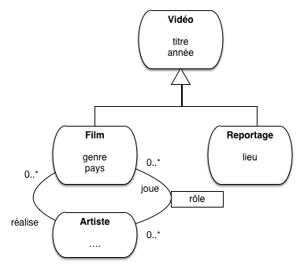
Fig. 32 Notre exemple d’héritage¶
Le type d’entité Vidéo factorise les propriétés commune à toutes les vidéos, quel que soit leur type particulier (film, ou reportage, ou dessin animé, ou n’importe quoi d’autre). Au niveau de chaque sous-type, on trouve les propriétés particulières, par exemple l’association avec les acteurs pour un film (qui n’a pas de sens pour un reportage ou un dessin animé).
La particularité de cette modélisation est qu’une entité (par exemple un film) voit sa représentation éclatée selon deux types d’entité, cas que nous n’avons pas encore rencontré.
Bilan¶
Le modèle E/A est l’outil universellement utilisé pour modéliser une base de données. Il présente malheureusement plusieurs limitations, qui découlent du fait que beaucoup de choix de conceptions plus ou moins équivalents peuvent découler d’une même spécification, et que la spécification elle-même est dans la plupart du cas informelle et sujette à interprétation.
Un autre inconvénient du modèle E/A reste sa pauvreté : il est difficile d’exprimer des contraintes d’intégrité, des structures complexes. Beaucoup d’extensions ont été proposées, mais la conception de schéma reste en partie matière de bon sens et d’expérience. On essaie en général :
de se ramener à des associations entre 2 entités : au-delà, on a probablement intérêt a transformer l’association en entité ;
d’éviter toute redondance : une information doit se trouver en un seul endroit ;
enfin – et surtout – de privilégier la simplicité et la lisibilité, notamment en ne représentant que ce qui est strictement nécessaire.
La mise au point d’un modèle engage fortement la suite d’un projet de développement de base de données. Elle doit s’appuyer sur des personnes expérimentées, sur l’écoute des prescripteurs, et sur un processus par itération qui identifie les ambiguités et cherche à les résoudre en précisant le besoin correspondant.
Dans le cadre des bases de données, le modèle E/A est utilisé dans la phase de conception. Il permet de spécifier tout ce qui est nécessaire pour construire un schéma de base de données normalisé, comme expliqué dans la prochaine session.
S4: Du schéma E/A au schéma relationnel¶
Supports complémentaires:
La création d’un schéma de base de données est simple une fois que le schéma entité/association est finalisé. Il suffit d’appliquer l’algorithme de normalisation vu en début de chapitre. Cette session est essentiellement une illustration de cet algorithme appliqué à la base de films, agrémentée d’une discussion sur quelques cas particuliers.
Application de la normalisation¶
Pour rappel, voici le schéma E/A de la base des films (Fig. 33), discuté précédemment.
Fig. 33 Le schéma E/A des films¶
Ce schéma donne toutes les informations nécessaires pour appliquer l’algorithme de normalisation vu en début de chapitre.
Chaque entité définit une dépendance fonctionnelle minimale et directe de l’identifiant vers l’ensemble des attributs. On a par exemple pour l’entité
Film:\[idFilm \to titre, année, genre, résumé\]Chaque association plusieurs-à-un correspond à une dépendance fonctionnelle minimale et directe entre l’identifiant de la première entité et l’identifiant de la seconde. Par exemple, l’association « Réalise » entre
FilmetArtiste`définit la DF:\[idFilm \to idArtiste\]On peut donc ajouter
idArtisteà la liste des attributs dépendants deidFilm.Enfin chaque association (binaire) plusieurs-à-plusieurs correspond à une dépendance fonctionnelle minimale et directe entre l’identifiant de l’association (qui est la paire des identifiants provenant des entités liées par l’association) et les attributs propres à l’association.
Par exemple, l’association
Jouedéfinit la DF\[(idFilm, idArtiste) \to rôle\]
Important
Si une association plusieurs-à-plusieurs n’a pas d’attribut propre, il faut quand même penser à créer une relation avec la clé de l’association (autrement dit la paire des identifiants d’entité) pour conserver l’information sur les liens entre ces entités.
Exemple: la Fig. 34 montre une association plusieurs-plusieurs
entre Film et Internaute, sans attribut propre. Il ne faut
pas oublier dans ce cas de créer une table Vu(idFilm, email)
constituée simplement de la clé. Elle représente le lien entre un film
et un internaute.
{kind=link}
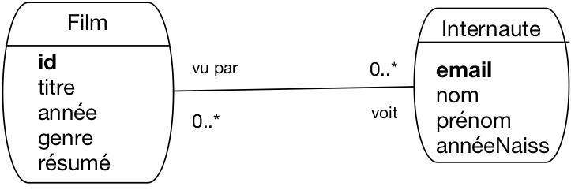
Fig. 34 L’association « Un internaute a vu un film »¶
Et c’est tout. En appliquant l’algorithme de normalisation à ces DF, on obtient le schéma normalisé suivant:
Film (idFilm, titre, année, genre, résumé, idArtiste, codePays)
Artiste (idArtiste, nom, prénom, annéeNaissance)
Pays (code, nom, langue)
Role (idFilm, idActeur, nomRôle)
Notation (email, idFilm, note)
Les clés primaires sont en gras: ce sont les identifiants des entités ou des associations plusieurs-à-plusieurs.
Les attributs qui proviennent d’une DF définie par une association, comme par exemple \(idFilm \to idArtiste\), sont en italiques pour indiquer leur statut particulier: ils servent de référence à une entité representée par un autre nuplet. Ces attributs sont les clé étrangères de notre schéma.
Comment nommer la clé étrangère? Ici nous avons adopté une convention simple
en concaténant id et le nom de la table référencée. On peut souvent faire mieux.
Par exemple, dans le schéma de la table Film,
le rôle précis tenu par l’artiste référencé dans l’association n’est
pas induit par le nom idArtiste.
L’artiste dans Film a un rôle de metteur en scène,
mais il pourrait tout aussi bien s’agir du décorateur
ou de l’accessoiriste: rien dans le nom de l’attribut ne le précise
On peut donner un nom plus explicite à l’attribut. Il n’est pas du tout
obligatoire en fait que les attributs constituant
une clé étrangère aient le même nom
que ceux de le clé primaire auxquels ils se réfèrent.
Voici le schéma de la table Film, dans lequel
la clé étrangère pour le metteur en scène est nommée
idRéalisateur.
Film (idFilm, titre, année, genre, résumé, idRéalisateur, codePays)
Le schéma E/A nous fournit donc une sorte de résumé des spécifications suffisantes pour un schéma normalisé. Il n’y a pas grand chose de plus à savoir. Ce qui suit donne une illustration des caractéristiques de la base obtenue, et quelques détails secondaires mais pratiques.
Illustration avec la base des films¶
Les tables ci-dessous montrent un exemple de la représentation des associations entre Film et Artiste d’une part, Film et Pays d’autre part (on a omis le résumé du film).
id |
nom |
prénom |
année |
|---|---|---|---|
101 |
Scott |
Ridley |
1943 |
102 |
Hitchcock |
Alfred |
1899 |
103 |
Kurosawa |
Akira |
1910 |
104 |
Woo |
John |
1946 |
105 |
Tarantino |
Quentin |
1963 |
106 |
Cameron |
James |
1954 |
107 |
Tarkovski |
Andrei |
1932 |
Noter
que l’on ne peut avoir qu’un artiste dont l”id est 102 dans
la table Artiste, puisque l’attribut idArtiste ne peut prendre qu’une
valeur. Cela correspond à la contrainte, identifiée pendant la conception
et modélisée dans le schéma E/A de la Fig. 33, qu’un film
n’a qu’un seul réalisateur.
En revanche rien n’empêche
cet artiste 102 de figurer plusieurs fois dans la
colonne idRéalisateur de la table Film puisqu’il n’y a aucune contrainte
d’unicité sur cet attribut.
On a donc bien l’équivalent de l’association un à plusieurs
élaborée dans le schéma E/A.
Et voici la table des films. Remarquez que chaque valeur de la colonne
idRéalisateur est l’identifiant d’un artiste.
id |
titre |
année |
genre |
idRéalisateur |
codePays |
|---|---|---|---|---|---|
1 |
Alien |
1979 |
Science-Fiction |
101 |
USA |
2 |
Vertigo |
1958 |
Suspense |
102 |
USA |
3 |
Psychose |
1960 |
Suspense |
102 |
USA |
4 |
Kagemusha |
1980 |
Drame |
103 |
JP |
5 |
Volte-face |
1997 |
Policier |
104 |
USA |
6 |
Pulp Fiction |
1995 |
Policier |
105 |
USA |
7 |
Titanic |
1997 |
Drame |
106 |
USA |
8 |
Sacrifice |
1986 |
Drame |
107 |
FR |
Note
Les valeurs des clés primaires et étrangères sont complètement indépendantes l’une de l’autre. Nous avons identifié les films en partant de 1 et les artistes en partant de 101 pour des raisons de clarté, mais en pratique rien n’empêche de trouver une ligne comme:
(63, Gravity, 2014, SF, 63, USA)
Il n’y a pas d’ambiguité: le premier “63” est l’identifiant du film, le second est l’identifiant du réalisateur.
Et voici, pour compléter, la table des pays.
code |
nom |
langue |
|---|---|---|
USA |
Etats Unis |
anglais |
FR |
France |
français |
JP |
Japon |
japonais |
Pour bien comprendre le mécanisme de representation des entités et associations
grâce aux clés primaires et étrangères, examinons
les tables suivantes montrant un exemple de représentation de Rôle.
On peut constater le mécanisme de référence unique obtenu grâce
aux clés des tables. Chaque rôle correspond
à un unique acteur et à un unique film. De plus
on ne peut pas trouver deux fois la même
paire (idFilm, idActeur) dans cette table (c’est un choix de conception qui découle
du schéma E/A sur lequel nous nous basons). En revanche
un même acteur peut figurer plusieurs fois (mais pas associé au même film),
ainsi qu’un même film (mais pas associé au même acteur).
Voici tout d’abord la table des films.
id |
titre |
année |
genre |
idRéalisateur |
codePays |
|---|---|---|---|---|---|
20 |
Impitoyable |
1992 |
Western |
130 |
USA |
21 |
Ennemi d’état |
1998 |
Action |
132 |
USA |
Puis la table des artistes.
id |
nom |
prénom |
année |
|---|---|---|---|
130 |
Eastwood |
Clint |
1930 |
131 |
Hackman |
Gene |
1930 |
132 |
Scott |
Tony |
1930 |
133 |
Smith |
Will |
1968 |
En voici la table des rôles, qui consiste ensentiellement en identifiants établissant des liens avec les deux tables précédentes. À vous de les décrypter pour comprendre comment toute l’information est représentée, et conforme aux choix de conception issus du schéma E/A. Que peut-on dire de l’artiste 130 par exemple? Peut-on savoir dans quels films joue Gene Hackman? Qui a mis en scène Impitoyable?
idFilm |
idArtiste |
nomRôle |
|---|---|---|
20 |
130 |
William Munny |
20 |
131 |
Little Bill |
21 |
131 |
Bril |
21 |
133 |
Robert Dean |
On peut donc remarquer que chaque partie de la clé de la table Rôle est elle-même une clé étrangère qui fait référence à une ligne dans une autre table:
l’attribut
idFilmfait référence à une ligne de la table Film (un film);l’attribut
idActeurfait référence à une ligne de la table Artiste (un acteur);
Le même principe de référencement et d’identification des tables s’applique à la table Notation. Il faut bien noter que, par choix de conception, on a interdit qu’un internaute puisse noter plusieurs fois le même film, de même qu’un acteur ne peut pas jouer plusieurs fois dans un même film. Ces contraintes ne constituent pas des limitations, mais des décisions prises au moment de la conception sur ce qui est autorisé, et sur ce qui ne l’est pas.
Associations avec type d’entité faible¶
Une entité faible est toujours identifiée par rapport à une autre entité. C’est le cas par exemple de l’association entre Cinéma et Salle (voir session précédente). Cette association est de type « un à plusieurs » car l’entité faible (une salle) est liée à une seule autre entité (un cinéma) alors que, en revanche, un cinéma peut être lié à plusieurs salles.
Le passage à un schéma relationnel est donc identique à celui d’une association 1-n classique. On utilise un mécanisme de clé étrangère pour référencer l’entité forte dans l’entité faible. La seule nuance est que la clé étrangère est une partie de l’identifiant de l’entité faible.
Regardons notre exemple pour bien comprendre. Voici le schéma obtenu pour représenter l’association entre les types d’entité Cinéma et Salle.
Cinéma (id, nom, numéro, rue, ville)
Salle (idCinéma, no, capacité)
On note que l’identifiant d’une salle est constitué de l’identifiant du cinéma et d’un numéro complémentaire permettant de distinguer les salles au sein d’un même cinéma. Mais l’identifiant du cinéma dans Salle est aussi une clé étrangère référençant une ligne de la table Cinéma. En d’autres termes, la clé étrangère est une partie de la clé primaire.
Cette modélisation simplifie l’attribution de l’identifiant à une nouvelle entité Salle puisqu’il suffit de reprendre l’identifiant du composé (le cinéma) et de numéroter les composants (les salles) relativement au composé. Il ne s’agit pas d’une différence vraiment fondamentale avec les associations 1-n mais elle peut clarifier le schéma.
Spécialisation¶
Note
La spécialisation est une notion avancée dont la représentation en relationnel n’est pas immédiate. Vous pouvez omettre d’étudier cette partie dans un premier temps.
Pour obtenir un schéma relationnel représentant la spécialisation, il faut trouver un contournement. Voici les trois solutions possibles pour notre spécialisation Vidéo-Film-Reportage. Aucune n’est idéale et vous trouverez toujours quelqu’un pour argumenter en faveur de l’une ou l’autre. Le mieux est de vous faire votre propre opinion (je vous donne la mienne un peu plus loin).
Une table pour chaque classe. C’est la solution la plus directe, menant pour notre exemple à créer des tables Vidéo, Film et Reportage. Remarque très importante: on doit dupliquer dans la table d’une sous-classe les attributs persistants de la super-classe. Le titre et l’année doivent donc être dupliqués dans, respectivement, Film et Reportage. Cela donne des tables indépendantes, chaque objet étant complètement représenté par une seule ligne.
Remarque annexe: si on considère que Vidéo est une classe abstraite qui ne peut être instanciée directement, on ne crée pas de table Vidéo.
Une seule table pour toute la hiérarchie d’héritage. On créerait donc une table Vidéo, et on y placerait tous les attributs persistants de toutes les sous-classes. La table Vidéo aurait donc un attribut id_realisateur (venant de Film), et un attribut lieu (venant de Reportage).
Les instances de Vidéo, Film et Reportage sont dans ce cas toutes stockées dans la même table Vidéo, ce qui nécessite l’ajout d’un attribut, dit discriminateur, pour savoir à quelle classe précise correspondent les données stockées dans une ligne de la table. L’inconvénient évident, surtout en cas de hiérarchie complexe, est d’obtenir une table fourre-tout contenant des données difficilement compréhensibles.
Enfin, la troisième solution est un mixte des deux précédentes, consistant à créer une table par classe (donc, trois tables pour notre exemple), tout en gardant la spécialisation propre au modèle d’héritage: chaque table ne contient que les attributs venant de la classe à laquelle elle correspond, et une jointure permet de reconstituer l’information complète.
Par exemple: un film serait représenté partiellement (pour le titre et l’année) dans la table Vidéo, et partiellement (pour les données qui lui sont spécifiques, comme id_realisateur) dans la table Film.
Aucune solution n’est totalement satisfaisante, pour les raisons indiquées ci-dessus. Voici une petite discussion donnant mon avis personnel.
La duplication introduite par la première solution semble source de problèmes à terme, et je ne la recommande vraiment pas. Tout changement dans la super-classe devrait être répliqué dans toutes les sous-classes, ce qui donne un schéma douteux et peu contrôlable.
Tout placer dans une même table se défend, et présente l’avantage de meilleures performances puisqu’il n’y a pas de jointure à effectuer. On risque de se retrouver en revanche avec une table dont la structure est peu compréhensible.
Enfin la troisième solution (table reflétant exactement chaque classe de la hiérarchie, avec jointure(s) pour reconstituer l’information) est la plus séduisante intellectuellement (de mon point de vue). Il n’y a pas de redondance, et il est facile d’ajouter de nouvelles sous-classes. L’inconvénient principal est la nécessité d’effectuer autant de jointures qu’il existe de niveaux dans la hiérarchie des classes pour reconstituer un objet.
Nous aurons alors les trois tables suivantes:
Video (id_video, titre, annee)
Film (id_video, genre, pays, id_realisateur)
Reportage(id_video, lieu)
Nous avons nommé les identifiants id_video pour mettre en évidence
une contrainte qui n’apparaît pas clairement dans ce schéma (mais qui est
spécificiable en SQL): comme un même objet est représenté dans les lignes
de plusieurs
tables, son identifiant est une valeur de clé primaire commune à ces lignes.
Un exemple étant plus parlant que de longs discours, voici comment nous représentons deux objets vidéos, dont l’un est un un film et l’autre un reportage.
id_video |
titre |
année |
|---|---|---|
1 |
Gravity |
2013 |
2 |
Messner, profession alpiniste |
2014 |
Rien n’indique dans cette table est la catégorie particulière des objets représentés. C’est conforme à l’approche objet: selon le point de vue on peut très bien se contenter de voir les objets comme instances de la super-classe. De fait, Gravity et Messner sont toutes deux des vidéos.
Voici maintenant la table Film, contenant la partie de la description de Gravity spécifique à sa nature de film.
id_video |
genre |
pays |
id_realisateur |
|---|---|---|---|
1 |
Science-fiction |
USA |
59 |
Notez que l’identifiant de Gravity (la valeur de id_video) est le même que pour la ligne contenant
le titre et l’année dans Vidéo. C’est logique puisqu’il s’agit du même objet. Dans Film,
id_video est à la fois la clé primaire, et une clé étrangère référençant une ligne
de la table Video. On voit facilement quelle requête
SQL permet de reconstituer l’ensemble des informations de l’objet.
select * from Video as v, FilmV as f
where v.id_video=f.id_video
and titre='Gravity'
Dans le même esprit, voici la table Reportage.
id_video |
lieu |
|---|---|
2 |
Tyroll du sud |
En résumé, avec cette approche, l’information relative à un même objet est donc éparpillée entre différentes tables. Comme souligné ci-dessus, cela mène à une particularité originale: la clé primaire d’une table pour une sous-classe est aussi clé étrangère référençant une ligne dans la table représentant la super-classe.
S5: Un peu de rétro-ingénierie¶
Supports complémentaires:
Pour bien comprendre le rapport entre un schéma entité-association et le schéma relationnel équivalent, il est intéressant de faire le chemin à l’envers, en partant d’un schéma relationnel connu et en reconstruisant la modélisation entité-association. Cette courte section présente cette démarche de rétro-ingénierie sur un de nos exemples.
Quelle conception pour la base des immeubles?¶
Reprenons le schéma de la base des immeubles et cherchons à comprendre comment il est conçu. Ce schéma (relationnel) est le suivant.
Immeuble (id, nom, adresse)
Appart (id , no , surface , niveau , idImmeuble)
Personne (id, prénom , nom , profession , idAppart)
Propriétaire (idPersonne , idAppart, quotePart)
Pour déterminer le schéma E/A, commençons par trouver les types d’entité. Une entité se caractérise par un identifiant qui lui est propre et la rend indépendante. Trois types d’entité apparaissent clairement sur notre schéma: les immeubles, les appartements et les personnes.
Il reste donc la table Propriétaire dont l’identifiant est une paire constituée de l’identifiant d’un immeuble et de l’identifiant d’une personne. Cette structure de clé est caractéristique d’une association plusieurs-plusieurs entre les types Immeuble et Personne.
Finalement, nous savons que les associations plusieurs-un sont représentés dans le schéma relationnel par les clés étrangères. Un appartement est donc lié à un immeuble, une personne à un appartement. Celles de la table Propriétaire ont déjà été prises en compte puisqu’elles font partie de la représentation des associations plusieurs-plusieurs. On obtient donc le schéma de la Fig. 35.
{kind=link}
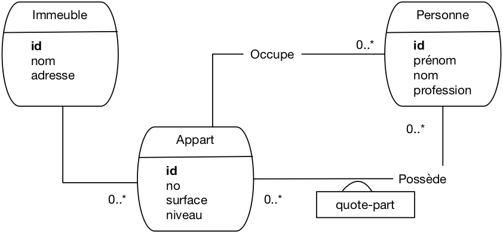
Fig. 35 Le schéma E/A des immeubles après rétro-conception¶
Avec entités faibles¶
On pourrait, à partir de là, se poser des questions sur les choix de conception. Une possibilité intéressante en l’occurrence est d’envisager de modéliser les appartements par entité faible. Un appartement est en effet une entité qui est très fortement liée à son immeuble, et on peut très bien envisager un appartement comme un composant d’un immeuble, en l’identifiant relativement à cet immeuble. Le schéma E/A devient alors celui de la Fig. 36.
{kind=link}
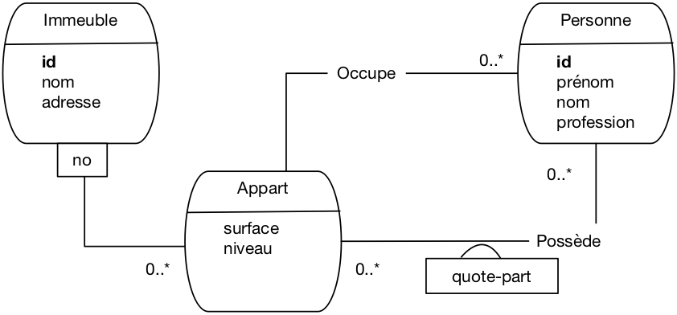
Fig. 36 Le schéma E/A des immeubles avec entité faible¶
L’impact sur le schéma relationnel est limité, mais quand même significatif. La clé de la table Appart devient une paire (idImmeuble, no), et les clés étrangères changent également. On obtient le schéma suivant.
Immeuble (id, nom, adresse)
Appart (idImmeuble, no, surface , niveau)
Personne (id, prénom, nom , profession , idImmeuble, no)
Propriété (idPersonne, idImmeuble, no, quotePart)
Il est important de noter que ce changement amènerait à modifier également les requêtes SQL des applications existantes. Tout changement affectant une clé a un impact sur l’ensemble du système d’information. D’où l’intérêt (et même l’impératif) de bien réfléchir avant de valider une conception.
Avec réification¶
On pourrait aussi réifier l’association plusieurs-plusieurs pour une faire un type d’entité Propriétaire. Le schéma entité-association est donné par la Fig. 37.
{kind=link}
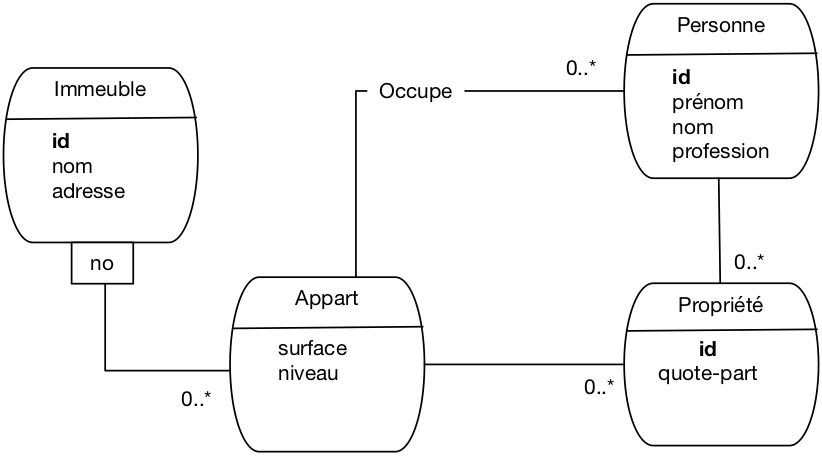
Fig. 37 Le schéma E/A des immeubles avec réification¶
L’impact principal est le changement de la clé de la table Propriétaire qui devient un identifiant propre. Voici le schéma relationnel.
Immeuble (id, nom, adresse)
Appart (idImmeuble, no , surface , niveau)
Personne (id, prénom , nom , profession , idImmeuble, no)
Propriété (id, idPersonne , idImmeuble, no, quotePart)
Une conséquence importante est que la contrainte d’unicité sur le triplet (idImmeuble, no, idPersonne) disparaît. On pourrait donc avoir plusieurs nuplets pour la même personne avec le même immeuble. Dans ce cas précis, cela ne semble pas souhaitable et on peut alors déclarer que ce triplet (idImmeuble, no, idPersonne) est une clé candidate et lui associer une contrainte d’unicité (nous verrons ultérieurement comment). On peut aussi en conclure que la réification n’apporte rien en l’occurrence et conserver la modélisation initiale.
Voici un petit échantillon des choix à effectuer pour concevoir une base de données viable à long terme!
Exercices¶
Note: vous pouvez produire des diagrammes assez facilement avec https://www.lucidchart.com
Exercice Ex-conc-1: compréhension d’un schéma E/A
{kind=link}
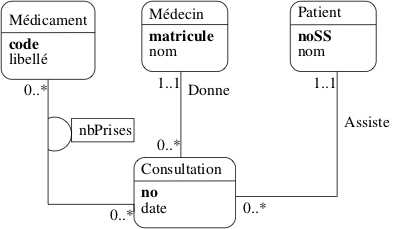
Fig. 38 Un schéma pour un centre médical¶
On vous donne un schéma E/A (Fig. 38) représentant des visites dans un centre médical. Répondez aux questions suivantes en fonction des caractéristiques de ce schéma (autrement dit, indiquez si la situation décrite est représentable avec ce schéma, indépendamment de sa vraissemblance).
Un patient peut-il effectuer plusieurs consultations?
Un médecin peut-il recevoir plusieurs patients dans la même consultation?
Peut-on prescrire plusieurs médicaments dans une même consultation?
Deux médecins différents peuvent-ils prescrire le même médicament?
Un patient peut-il voir deux médecins dans la même consultation?
Existe-t-il une posibilité de réifier une des associations, si oui laquelle?
Un médecin peut sans doute être également un patient, et vice-versa. Que devient le schéma avec cette hypothèse?
Exercice Ex-conc-2: un quotidien
Voici le schéma E/A (Fig. 39) du système d’information (très simplifié) d’un quotidien.
{kind=link}
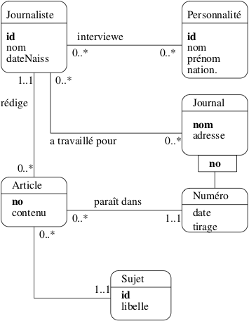
Fig. 39 Système d’information d’un quotidien¶
Répondez aux questions suivantes, en fonction des caractéristiques du modèle.
Un article peut-il être rédigé par plusieurs journalistes?
Un article peut-il être publié plusieurs fois?
Peut-il y avoir plusieurs articles sur le même sujet dans le même numéro?
Connaissant un article, est-ce que je connais le journal dans lequel il est paru?
Un journaliste peut-il travailler pour deux journaux en même temps?
Voyez-vous une entité faible? Comment justifieriez-vous ce choix?
Exercice Ex-conc-3: cardinalités
Voici (Fig. 40) le début d’un schéma E/A pour la gestion d’une médiathèque. La spécification des besoins est la suivante: un disque est constitué d’un ensemble de plages. Chaque plage contient un oeuvre et une seule, mais une œuvre peut s’étendre sur plusieurs plages (par exemple une symphonie en 4 mouvements). De plus, pour chaque plage, on connaît les interprètes.
{kind=link}
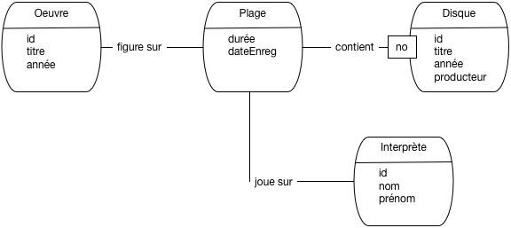
Fig. 40 Début de schéma pour une médiathèque¶
Répondez aux questions suivantes
Complétez le modèle de la Fig. 40 en ajoutant les cardinalités.
On suppose que chaque interprète utilise un instrument (voix, piano, guitare, etc) et un seul sur une plage. Où placer l’attribut « Instrument » dans le modèle précédent?
Transformez l’association « Joue » dans la Fig. 40 en entité (réification). Donnez le nouveau modèle, sans oublier les cardinalités.
Introduisez maintenant un entité Auteur (d’une œuvre) dans le schéma. Une œuvre peut avoir plusieurs auteurs.
Exercice Ex-conc-4: normalisation
Reprenons le schéma de la Fig. 38. Nous allons appliquer l’algorithme de normalisation.
Indiquez toutes les dépendances fonctionnelles définies par ce schéma
En déduire le schéma des relations, en mettant en valeur clés primaires et clés étrangères
Exercice Ex-conc-5: schéma relationnel
Donner le schéma relationnel pour le modèle de la médiathèque (partez du modèle initial, celui de la Fig. 40 ou, mieux, de votre modèle final.
Exercice Ex-conc-6: rétroconception
Vous connaissez maintenant par cœur le schéma de la base des voyageurs. Saurez-vous trouver, par inversion de l’algorithme de normalisation, le schéma E/A dont il est issu?
Atelier: étude du cas « Zoo »: le schéma normalisé¶
Nous reprenons l’étude du schéma « Zoo » vu dans le chapitre Le modèle relationnel. Maintenant, on va chercher un schéma correct.
Donner une décomposition en troisième forme normale.
Quelles sont, dans la décomposition, les clés primaires et étrangères.
Quel serait le schéma E/A correspondant?
Est-il encore possible d’avoir les anomalies constatées dans la table initiale?
Pour conclure, vous pouvez (optionnel) installer un outil de conception comme le MySql workbench (https://www.mysql.com/fr/products/workbench/) et saisir votre schéma entité association avec le module Entity relationship diagram (voir Fig. 45). À partir de là vous pouvez tout paramétrer et engendrer automatiquement le schéma de la base.

Fig. 45 L’outil de conception de MySQL¶
Atelier collectif: concevons le système d’information d’un hôpital¶
À faire en groupe: proposer le modèle conceptuel d’une base de données permettant à un hôpital de gérer l’admission de ses patients, leur prise en charge par des médecins, leur placement dans une chambre, les examens qui leur sont prescrits, etc. Pas de spécification particulière: les besoins sont à exprimer en groupe, et la solution aux besoins s’élabore par consensus.
Vous pouvez utiliser un outil comme Mysqlworkbench, ou travailler sur papier ou au tableau. À la fin, il faut disposer d’un schéma relationnel correct: en troisième forme normale, et correspondant aux besoins.

Ce cours de Philippe Rigaux est mis à disposition selon les termes de la licence Creative Commons Attribution - Pas d’Utilisation Commerciale - Partage dans les Mêmes Conditions 4.0 International.
Table Of Contents
- Introduction
- Le modèle relationnel
- SQL, langage déclaratif
- SQL, langage algébrique
- SQL, récapitulatif
- Conception d’une base de données
- Schémas relationnel
- Procédures et déclencheurs
- Transactions
- Une étude de cas
- Annales des examens
Recherche
Saisissez un ou plusieurs mots-clés.